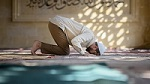

hukum sholat
Dalam banyak hadis, Nabi Muhammad telah memberikan peringatan keras kepada orang yang suka meninggalkan salat wajib, mereka akan dihukumi menjadi kafir[2] dan mereka yang meninggalkan salat maka pada hari kiamat akan disandingkan bersama dengan orang-orang, seperti Qarun,
Fir'aun, Haman dan Ubay bin Khalaf.[3]
Baca selengkapnya....

hukum zakat
Zakat merupakan satu dari lima rukun Islam, sebagaimana hadis dari Rasulullah SAW berikut ini:
“Islam dibangun di atas lima dasar: mentauhidkan Allah (bersyahadat Laailaahaillallah dan Muhammad Rasulullah);
mendirikan salat; menunaikan zakat;uasa Ramadhan dan berangkat haji.” (Hadis Riwayat Muslim)....
Baca selengkapnya......
hukum haji
Pergi haji hukumnya wajib bagi setiap orang muslim dewasa yang telah memenuhi syarat.
Arab Saudi minimal satu kali dalam seumur hidup.
Baca selengkapnya......